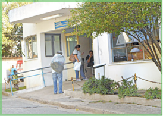
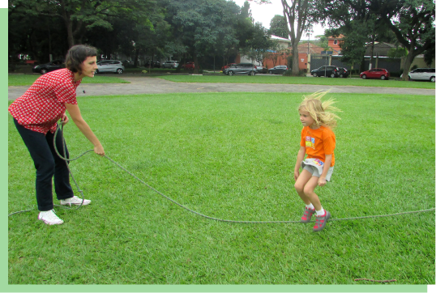

(1).png)
|
.png)
|
.png)
|
LOCALIDADE
Alto da Lapa, City Lapa e Lapa de Baixo

História

Localidade


Escolas Fundamental I e II
A Lapa conta com diversas escolas e institutos, sendo 13 delas estaduais, entre as principais estão Colégio Nossa Senhara da Lapa, Colégio Adventista, Colégio IPÊ, Colégio Santo Ivo, Módulo, entre outros. Algumas delas sendo consideradas as melhores escolas de São Paulo.


Hospitais e Pronto Socorro
O bairro da Lapa pode proporcionar à população assistência médica integral, curativa e preventiva, sob quaisquer regimes de atendimento, inclusive o domiciliar. Sendo eles Hospitais Albert Sabin, Hospital Metropolitana, Pronto-socorro Municipal Prof. João Catarin Mezomo, entre outros.
Praças
Ao longo do dia, a praça recebe pessoas das mais variadas idades realizando atividades de lazer, caminhadas ou simplesmente passeando e, se você procura por um lugar democrático para reunir os amigos, é o local perfeto, alguns exemplos de praças na Lapa são Praça John Lennon, Praça Virgem da Lapa, Praça Vidal Antonio de castro, entre outras.
